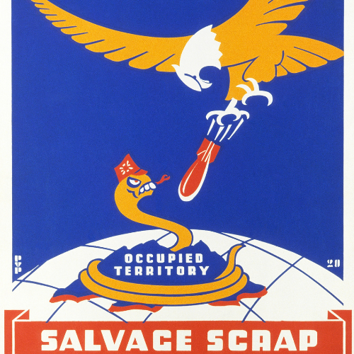

สหรัฐอเมริกา (United States of America, USA)
-ผู้นำฝั่งโลกเสรี ยึดมั่นในระบอบประชาธิปไตยและเศรษฐกิจแบบทุนนิยม ใช้นโยบาย “สกัดกั้นคอมมิวนิสต์” (Containment Policy) ตามหลักการทรูแมน (Truman Doctrine) ¹ เพื่อไม่ให้อิทธิพลของโซเวียตขยายตัว
-ใช้แผนการมาร์แชล (Marshall Plan) ช่วยฟื้นฟูเศรษฐกิจประเทศยุโรป เพื่อป้องกันการขยายตัวของอิทธิพลคอมมิวนิสต์
-ใช้ทฤษฎีโดมิโน (Domino Theory) ² ในการเข้าแทรกแซงภูมิภาคต่างๆ โดยเฉพาะเอเชียตะวันออกเฉียงใต้
-ก่อตั้ง NATO ในปี 1949 เพื่อเป็นพันธมิตทางทหารของประเทศฝ่ายตะวันตก(Ex. สหราชอาณาจักร,ฝรั่งเศส,เยอรมนีตะวันตก Etc.)
